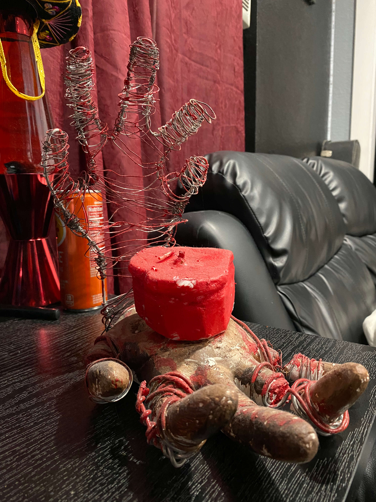
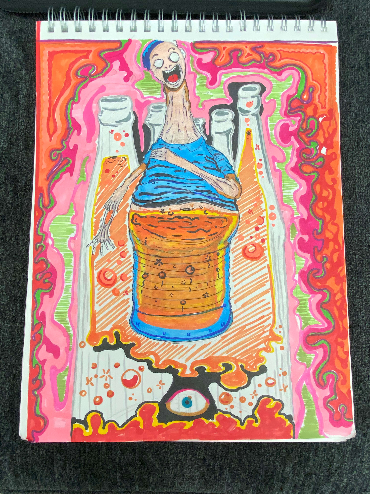
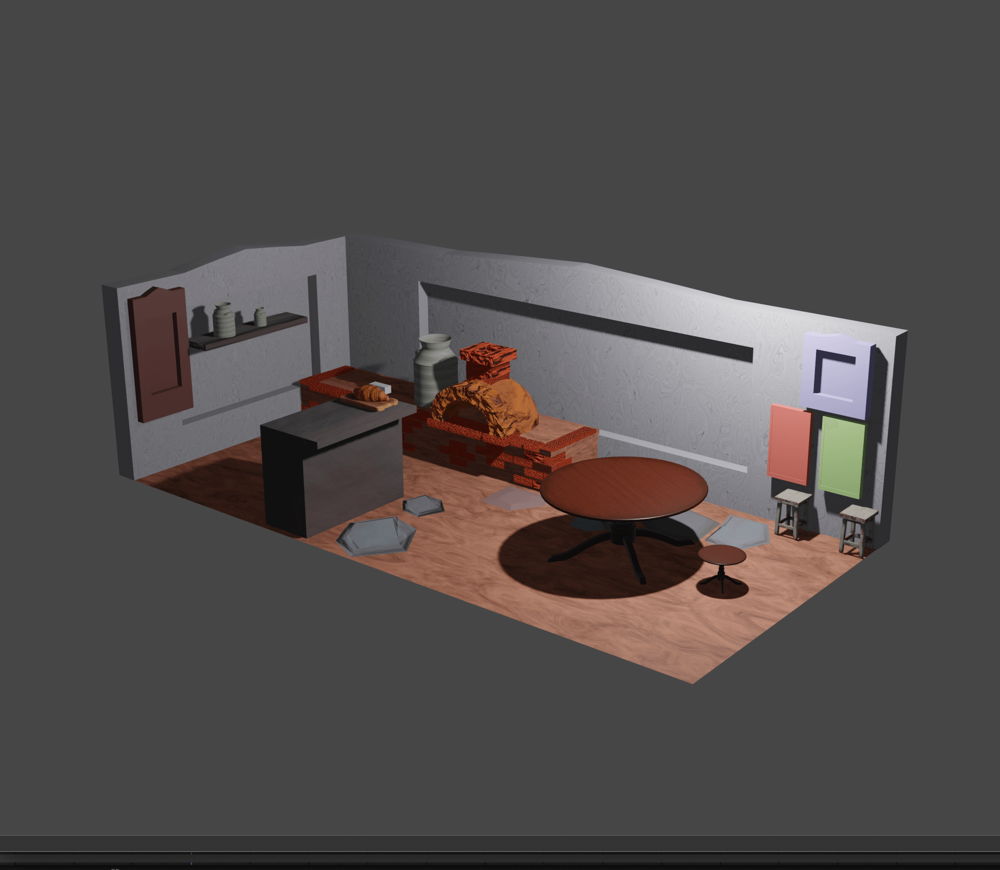
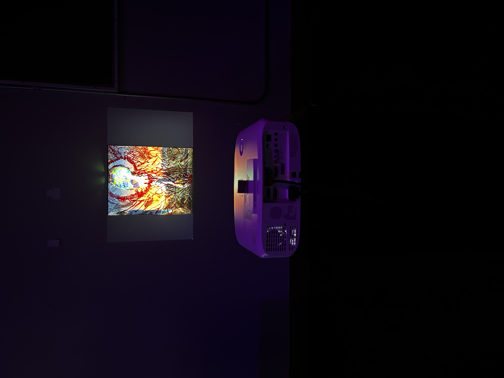

ᯓ★ About Me
born in a small town of Hollister, California. Ever since he was a young chap, he loved to draw away through the days to perfect his craft. Creating numerous drawings that would soon evolve to more sophisticated and intricate pieces that truly reflect his passion as an extension of his mind. Martin is no stranger to taking chances,taking unconventional means to craft something he may not have done before. Taking much enjoyment in learning new techniques and art approaches. Much like a master wields a sword, He harnesses the power of the arts to bring his imaginative visions to life in any shape or form he desires. He strives for his creations to outlast him, ensuring that a piece of his creativity endures long after he’s gone.
My Work

Minds Eye
The idea was derived from seeing someone elses mind and taking a look inside what I would describe would not make a lot of sense to anyone at first glance, only to the person whos mind it belongs to can tell you it does for them.
{kind=link}

Lend a hand
This piece aims to visualize how often we hold on to things close to our hearts. Whatever we may hold onto our hearts dearly will inevitably hurt us in the end.
{kind=link}

Drink some
Inspired by Junji ito's artwork, I created a drawing that reflects a body horror into what already is horrible alcoholism.
{kind=link}

Pizza Parlor
This piece was made during intro to 3D printing and the usage of Blender. I was toying with the lighting and shapes and ended up making a pizza parlor for simple creation.
{kind=link}

Roots
This 20 x 24 inch canvas is constructed with heavily textured acrylic paint, creating a surface that physically rises from the plane. The paint builds into layered ridges and forms, giving the impression that the imagery is emerging outward, almost alive. The tactile quality of the piece emphasizes depth and movement, as if the composition is pushing beyond its boundaries rather than remaining contained within them. The work began with an interest in the idea of “roots,” though its direction remained uncertain at first. Inspiration came from a range of visual media, but the concept clarified when I began thinking about nostalgia—specifically, how our memories of childhood can be reshaped and manipulated. I became interested in how large corporations capitalize on these emotional attachments, transforming personal, meaningful memories into tools for profit. This realization shifted the piece from a general exploration of roots into a more critical reflection on how those roots are used and distorted. Conceptually, the work explores nostalgia as both comforting and limiting. While we often revisit the past as a source of warmth and identity, there is also a tendency to become stuck within it. The idea of being “rooted” takes on a double meaning: it can signify grounding and origin, but also stagnation and an inability to grow. Emotionally, the piece carries a sense of melancholy—suggesting that an overattachment to the past can prevent movement forward. In this way, the work reflects on the tension between memory and progress, questioning what it means to hold onto our roots while still allowing ourselves to change.

ODD
We often hear that standing out in a crowd requires a certain kind of uniqueness. What is less often acknowledged is that this kind of individuality demands stepping beyond one’s comfort zone. To truly distinguish oneself is to embrace discomfort, to move past the familiar in search of something more authentic. There comes a point when being the “odd one out” is no longer a disadvantage, but a strength—it reflects a confidence in one’s own identity. This piece is inspired by the idea that before we can become number one, we must first be willing to be “odd,” to accept and celebrate what sets us apart.
Contact Me
Email: Regularmartin@hotmail.com